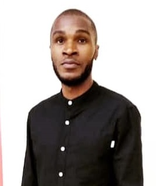

Augustine Nwosu

Summary
A graduate of Telecom Engineering with experience in Computer Networking.
Hardworking, resilient and very conversant with a wide range of computer
operations
Education
-
Bachelor of Engineering - Federal University of Technology Minna
(2013-2018)
Work Experience
-
NNPC TOWERS (Industrial Training)
July 2017- December 2017
- System maintenance and repairs.
- Setting up users accounts, permissions and passwords.
- Installing new software and hardware.
-
GEOFFREY ONWUZULIKE IBEAGHA FOUNDATION (GOIF)
2018 – till date
- Design and maintenance of foundation’s social media platforms
- Coordination of logistics for medical outreaches
- Collation of database for foundation’s activities
-
Provision of a wide range of IT support services for the foundation
-
ALPHA VISION
December 2019 – May 2021
- Installing and updating network system improvement.
-
Performing data backups to ensure all company-owned work is saved.
- Installing and configuring wireless networking equipment.
-
CRUSH CAFÉ ABUJA
June 2021 - January 2022
- Managing transactions with customers using cash register
- Collecting payments in cash or credit
-
Resolve customer complaints, guide them and provide relevant
information
-
Track transactions on balance sheets and report any discrepancies
-
GREATWAY FINANCIAL INC.
January 2022 - Till date
- Printing of Illustration for policy delivery
- Highlighting of policy delivery illustrations
- Highlighting of policy contracts
- Presentation of highlighted policy contract to clients
Skills
- Web Design ⭐ ⭐ ⭐ ⭐
- Graphic Design ⭐ ⭐ ⭐ ⭐
- Microsoft Office Suite ⭐ ⭐ ⭐ ⭐
Award and Certifications
- Employee of the month - Greatway Financial 2022
Other